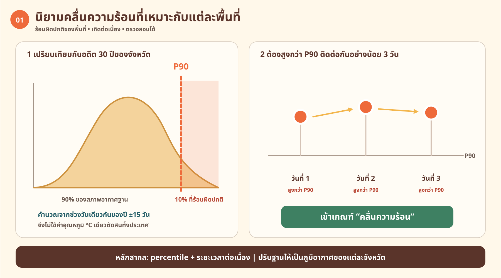
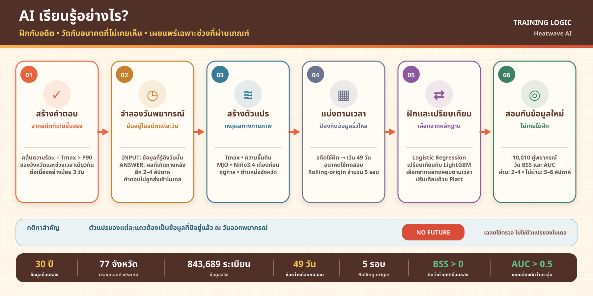
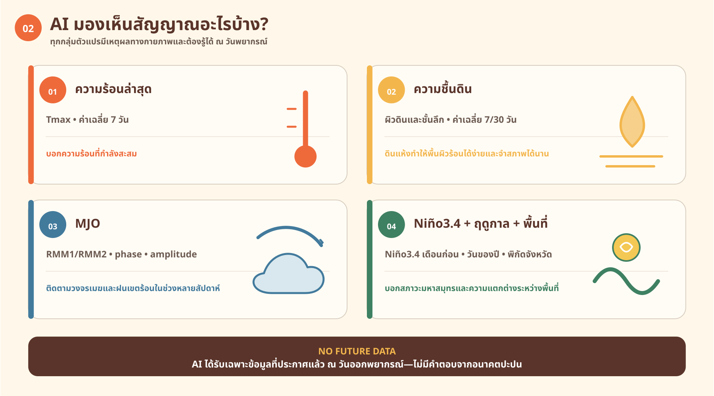
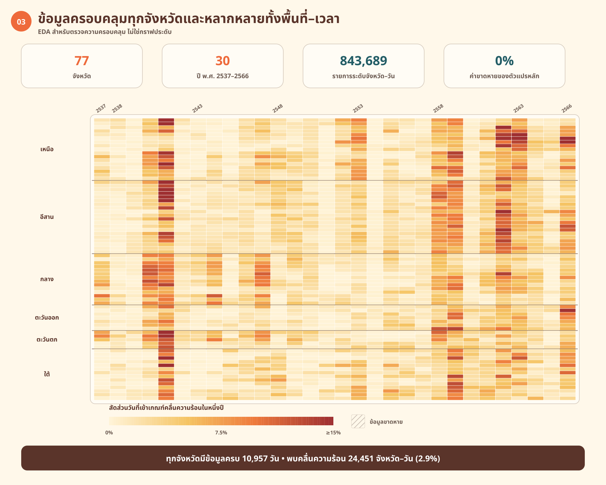
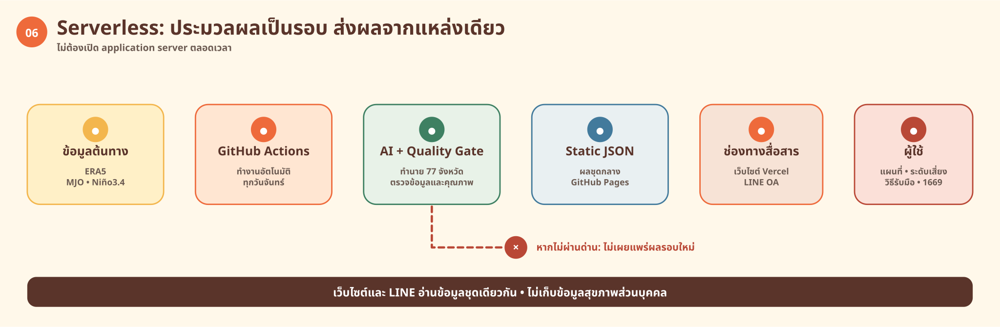
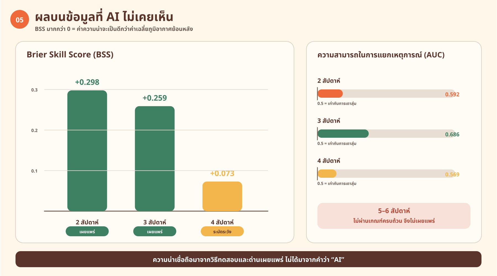
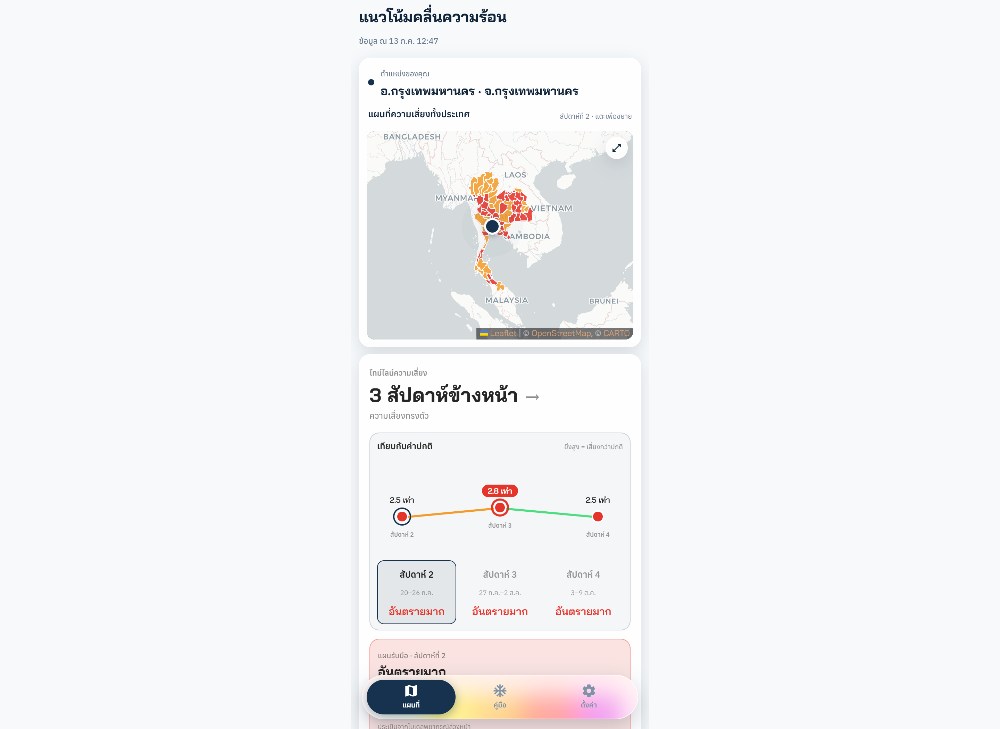
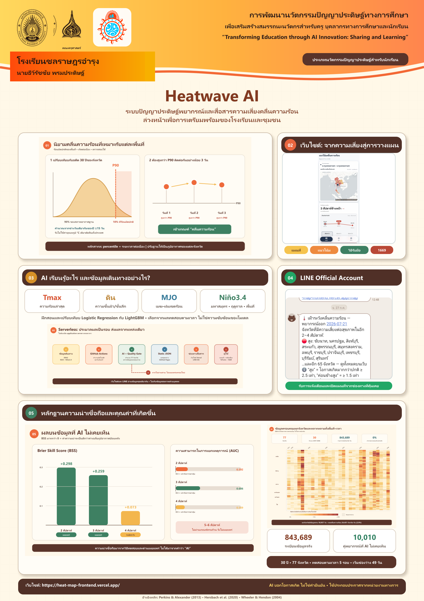

Static Research Hub · Thailand
พยากรณ์ความเสี่ยง
คลื่นความร้อนด้วย AI
งานวิจัยเพื่อประเมินความน่าจะเป็นของการเกิดคลื่นความร้อนรายจังหวัดในประเทศไทยล่วงหน้า 2–4 สัปดาห์ ด้วยข้อมูลภูมิอากาศและแมชชีนเลิร์นนิง
A probabilistic, sub-seasonal heatwave outlook for Thailand — designed to make climate risk easier to understand, verify, and act on.
Research artifact · Production model:
logistic_balanced_calHEATMAP
77จังหวัด
2–4สัปดาห์
P90นิยามเหตุการณ์
Climate signals → calibrated probability → public action
01 At a glance
ภาพรวมโครงงาน
Project profile / ขอบเขตที่ตรวจสอบได้
Thai provinces
Public forecast lead
Historical climate data
Leakage control gap
ERA5·Soil moisture·MJO·Niño3.4·Calibrated ML
02 Problem / ปัญหา
ความร้อนที่ต้องรู้ล่วงหน้า
Why a weekly probability matters / ทำไม “ความน่าจะเป็น” จึงสำคัญ
คลื่นความร้อนไม่ได้กระทบทุกพื้นที่เหมือนกัน และการเตรียมตัวล่วงหน้าเพียงไม่กี่วันอาจไม่เพียงพอสำหรับโรงเรียน ชุมชน หรือผู้ทำงานกลางแจ้ง
Heatwave AI จึงไม่ได้พยายามบอกว่า “วันพรุ่งนี้จะร้อนกี่องศา” แต่ตอบคำถามที่ใช้วางแผนได้มากกว่า: อีก 2–4 สัปดาห์ จังหวัดใดมีโอกาสเกิดเหตุการณ์คลื่นความร้อนสูงกว่าปกติ?
นิยามเหตุการณ์ / Event definition
Tmax > percentile 90
อุณหภูมิสูงสุดเกินเกณฑ์ภูมิอากาศท้องถิ่นต่อเนื่องอย่างน้อย 3 วัน
ดูนิยามแบบภาพ

03 Method / วิธีการ
จากสัญญาณภูมิอากาศสู่ความเสี่ยง
Data → features → model → quality gate
ระบบรวมสัญญาณจากพื้นผิวโลกและภูมิอากาศขนาดใหญ่ แล้วฝึกโมเดลให้รายงานเป็น probability ที่ผ่านการ calibration
01
ข้อมูลภูมิอากาศ
ERA5 Tmax, soil moisture, MJO และ Niño3.4
02
ชุดข้อมูลรายจังหวัด
สร้าง target รายสัปดาห์สำหรับ 77 จังหวัด
03
ตรวจสอบตามเวลา
Rolling-origin validation พร้อม gap 49 วัน
04
เผยแพร่เมื่อผ่านเกณฑ์
ตรวจ probability skill, calibration และ contract




04 Evidence / หลักฐาน
ความน่าเชื่อถือมาก่อนความหวือหวา
How the research is evaluated / วิธีประเมินผล
Probabilistic metrics
ประเมินทั้ง Brier Score, Brier Skill Score และ ROC-AUC เพื่อดูทั้งคุณภาพของ probability และความสามารถในการแยกเหตุการณ์
ดู model metricsCalibration
ความน่าจะเป็นที่รายงานควรสอดคล้องกับความถี่ที่เกิดจริง ไม่ใช่เพียงทายลำดับความเสี่ยงได้ดี
ดู calibration diagnosticsLeakage controls
ใช้ time-based split และ embargo gap 49 วัน เพื่อไม่ให้ข้อมูลจากช่วงอนาคตไหลย้อนกลับไปในชุดฝึก
ดู integrity notesOperational gate
candidate model ต้องมีหลักฐานระดับ province-level และผ่าน readiness gate ก่อนจึงจะพิจารณาแทน production model
ดู promotion readiness
การแยกสถานะที่สำคัญ
Production forecast ปัจจุบันใช้ logistic_balanced_cal ส่วน research candidates ที่ยังไม่ผ่าน readiness gate จะไม่ถูกนำเสนอว่าเป็นระบบ production
05 Product / ระบบ
จากงานวิจัยสู่การสื่อสารความเสี่ยง
Research artifact → public-facing product

ผลลัพธ์ไม่ได้หยุดอยู่ที่ notebook แต่ถูกส่งผ่าน forecast contract ไปยังเว็บและช่องทางสื่อสารที่คนทั่วไปเข้าถึงได้
เปิด Live ForecastLatest published product · Vercel
LINE OA source / prototypeระบบสื่อสารผลพยากรณ์รายสัปดาห์
Forecast contractStatic JSON artifact · inspectable output
หมายเหตุการใช้งาน
Forecast นี้เป็นความน่าจะเป็นรายสัปดาห์ ไม่ใช่การพยากรณ์อุณหภูมิ ความรุนแรง หรือประกาศเตือนภัยอย่างเป็นทางการ ควรใช้ร่วมกับข้อมูลจากหน่วยงานที่เกี่ยวข้อง
06 Documents / เอกสาร
เริ่มอ่านจากจุดที่เหมาะกับคุณ
Curated research library / เอกสารฉบับหลักที่คัดมาแล้ว

เปิดโปสเตอร์ฉบับเต็มSTART HERE · สำหรับผู้ประเมิน
ภาพเดียวที่เห็นทั้งปัญหา วิธีการ และผลลัพธ์
โปสเตอร์ฉบับหลักเหมาะสำหรับทำความเข้าใจโครงงานอย่างรวดเร็ว จากนั้นจึงเลือกอ่านเอกสารฉบับเต็มหรือ paper ในส่วนถัดไป
อ่านโปสเตอร์ PDF01
บทคัดย่อและข้อเสนอโครงงานAbstract & proposal · BUU Sciweek↗
เอกสารสรุปสาระสำคัญResearch summary · concise overview↗
โครงงานฉบับสมบูรณ์Full project report · five-chapter version↗
HeatMAP research paperAcademic paper · selected artifact↗
Research documents
07 Reproducibility / ทำซ้ำได้
อ่าน ตรวจสอบ และติดตามย้อนกลับได้
Research Hub นี้รวบรวมเฉพาะ artifact ที่อ้างอิงกลับไปยัง repository ต้นทางได้ โดยไม่เปิดเผย raw data หรือ model credentials
Static artifactหน้าเว็บไม่มีการคำนวณโมเดลใน browser
Traceable sourcesเอกสารและรายงานชี้กลับไปยัง source repo
Explicit statusแยก production, research candidate และ pending
Public interfaceผลที่เผยแพร่ใช้ forecast contract ที่ตรวจ schema ได้